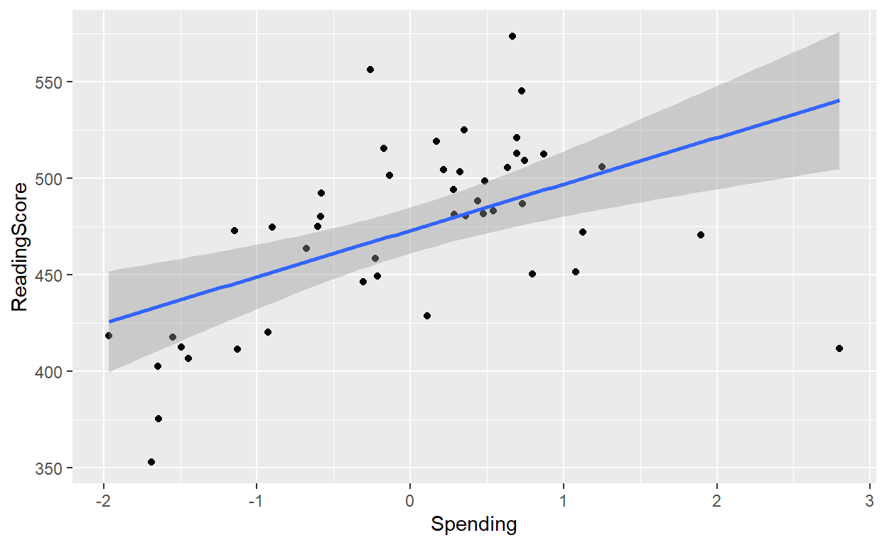
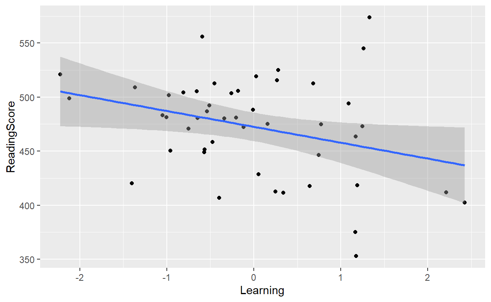

The Basics
Introduction
In this section we will outline how to use linear models to analyse the PISA data. In statistics, linear regression is a linear approach to modelling the relationship between a variable and one or more explanatory variables (also called dependent and independent variables). The case of one explanatory variable is called simple linear regression; for more than one, the process is called multiple linear regression.
In linear regression, the relationships are modeled using linear predictor functions whose unknown model parameters are estimated from the data that have been collected.
In this section, we will briefly cover general linear models before progressing to generalised linear models. Once we have looked at general and generalised linear models, we will look at Linear Mixed Models before finally covering Generalised Linear Mixed Models. By the end of this section you should have a solid grasp of the key concepts required to create your own models to analyse your data.
Sample PISA Data
To illustrate the concept, we will choose three plausibly related variables with standardised socres from the PISA dataset:
Spending: time spent in the classroom.Learning: the amount of spending on education by each of 70 different countries across the world.
SES: the socio economical status by country.
To give you an idea of what this looks like, the first few countries in the data are shown below:
| Country | ReadingScore | Spending | Learning | SES |
|---|---|---|---|---|
| Australia | 505.5203 | 0.6364152 | -0.6551065 | 1.1625559 |
| Austria | 472.1099 | 1.1253812 | -0.1189657 | 0.6341455 |
| Belgium | 486.7941 | 0.7340408 | -0.5380042 | 0.7467608 |
| Brazil | 411.5607 | -1.1286013 | 0.3384847 | -1.5466653 |
| Bulgaria | 406.6423 | -1.4454873 | -0.3991556 | 0.1554284 |
| Canada | 488.1452 | 0.4413709 | -0.0108559 | 1.2753796 |
Visualising the Data
Again, we will start by visualising our data with a scatterplot so that we become familiar with the datapoints. The plots in this section are interactive thanks to the ggplotly function, and you can hover over the points to view the country name. The larger the point size, the greater the SES.
#Raw spending,learning and SES data
ggplotly(
ggplot(learnSpendSES_data, aes(Learning, Spending, group = Country)) +
geom_point(aes(color = SES, size =SES)) +
xlab('Average of time spent in the classroom') +
ylab('Amount of spending on education')+
theme(legend.position="none"),
tooltip = "group")
A good point to start when beginning an analysis is to visualize the data. In this case we can begin by visualizing the distribution of the scores (the dependent variable in our data). In order to do this we can create a histogram.

From the histogram it appears that the data is slightly negatively skewed. This would suggest that the use of a standard linear model may not be the best approach. Despite this we can still fit one and see how it deals with the data.
An introduction to regression
Regression analysis is a way of predicting an outcome variable Y from one predictor variable X1 (simple regression) or several predictor variables X1, X2… (multiple regression) using the folowing general equation:
outcome = (model) + errorThis means that we predict the outcome by whatever model we fit to the data plus some kind of error. In regression, the model we fit is linear, which means that we summarize a data set with a straight line. In the ecuation, we will replace the word model by things that define the line that we fit to the data. The mathematical equation to estimate the value of the response Y when only the X is known can be generalized as follows:
Y = (b0 + b1 Xi) + E
In this equation:
- Y is the outcome that we want to predict
- Xi is the participants score on the predictor variable.
- Parameter b0 is the intercept and b1 is the slope. Both are known as the regression coefficients and we will refer at them in the next sections.
- E is a residual term, which represents the difference between the score predicted by the line for participant i and the score that participant i actually obtained. From this term is important to understand that it represents the fact that our model will not fit the data collected perfectly.
###Previous Graphical Analysis
The graphical representation of our variables can help visualize any linear relationships between the dependent and the independent variables. As we have multiple predictor variables, a scatter plot is drawn for each one of them against the outcome variable.
We can visualize the linear relationship between the predictor variables (Spending,Learning, SES) and the response variable (ReadingScore) through a scatter plot using ggplot function:
ggplot(learnSpendSES_data, aes(x=Spending, y=ReadingScore)) +
geom_point()+ #scatterplot for Spending
geom_smooth(method=lm) # Add linear regression line## `geom_smooth()` using formula 'y ~ x'
ggplot(learnSpendSES_data, aes(x=Learning, y=ReadingScore)) +
geom_point()+ #scatterplot for Learning
geom_smooth(method=lm) # Add linear regression line## `geom_smooth()` using formula 'y ~ x'
The scatter plots along with the smoothing line above suggest a linearly increasing relationship between Spendingand ReadingScorevariables, and a linearly decreasing relationship between Learningand ReadingScore variables.
Could you do it for our variable SES? Use the function ggplot and follow the same structure of the previous scatterplot.
ggplot( , aes(x= , y= ))+
geom_point()+
geom_smooth(method= )## variables ##
#Use the dataset learnSpendSES_data with Learning as predictor and ReadingScore as outcome variable
# Then, add linear regression line#create the plot
ggplot(learnSpendSES_data, aes(x=SES, y=ReadingScore)) +
geom_point()+
geom_smooth(method=lm)We can se that the variable SES does not appear to have a linear distribution since we can see a point cloud where it look as if there are two subsets.
Simple models
Simple linear regression model
For our linear model we will use the lm() function. Form our data set learnSpendSES, our ReadingScore column will be our dependent variable, whilst the Spending will be used as our independent variables (predictors).
# Use the lm function to create a linear model
LM_model_one <- lm(ReadingScore ~ Spending, data = learnSpendSES_data)
summary(LM_model_one)##
## Call:
## lm(formula = ReadingScore ~ Spending, data = learnSpendSES_data)
##
## Residuals:
## Min 1Q Median 3Q Max
## -128.499 -26.330 2.797 23.180 89.279
##
## Coefficients:
## Estimate Std. Error t value Pr(>|t|)
## (Intercept) 473.047 5.902 80.144 < 2e-16 ***
## Spending 24.018 5.920 4.057 0.000195 ***
## ---
## Signif. codes: 0 '***' 0.001 '**' 0.01 '*' 0.05 '.' 0.1 ' ' 1
##
## Residual standard error: 40.46 on 45 degrees of freedom
## Multiple R-squared: 0.2678, Adjusted R-squared: 0.2516
## F-statistic: 16.46 on 1 and 45 DF, p-value: 0.0001951
Exercise
Now it is your turn to uselm()function for modeling the relationship between Learning and ReadingScore from learnSpendSES_data.
#Create the linear model from dataset learnSpendSES_data
LM_model_two <- lm(~ ,data = )
#Ask for the summary result of your model
summary()## variables ##
# The first variable you have to write is our dependent and the second, our independent variable
# For visualize the result write the name of our model
# Warning! next hint shows full solution. Try something before it!## variables ##
# our dependent variable is ReadingScore and our independent variable is Learning#create biplot
LM_model_two <- lm(ReadingScore ~ Learning, data = learnSpendSES_data)
summary(LM_model_two)As we can see, the coefficient for Learningis negative, indicating that it has a negative association with our outcome variable ReadingScore.
Multiple linear regression model
When the two predictors, Spending and Learning are included in our regression model, the value of R-square (how much of the variability in the outcome is accounted for by the predictors) will increase? We will uselm() with learnSpendSES_data function for check it.
# Use the lm function to create a linear model
LM_model_three <- lm(ReadingScore ~ Spending + Learning, data = learnSpendSES_data)
summary(LM_model_three)##
## Call:
## lm(formula = ReadingScore ~ Spending + Learning, data = learnSpendSES_data)
##
## Residuals:
## Min 1Q Median 3Q Max
## -102.365 -25.026 0.278 22.264 97.813
##
## Coefficients:
## Estimate Std. Error t value Pr(>|t|)
## (Intercept) 472.890 5.836 81.023 < 2e-16 ***
## Spending 21.626 6.088 3.552 0.000925 ***
## Learning -8.714 6.102 -1.428 0.160339
## ---
## Signif. codes: 0 '***' 0.001 '**' 0.01 '*' 0.05 '.' 0.1 ' ' 1
##
## Residual standard error: 40 on 44 degrees of freedom
## Multiple R-squared: 0.3003, Adjusted R-squared: 0.2685
## F-statistic: 9.44 on 2 and 44 DF, p-value: 0.0003878
The adjusted R-square in multiple regression model has increase from 0.25 to 0.27, but only Spending variable made a significant contribution. We can see what happen when the interaction of this two factors is included:
# Use the lm function to create a linear model
LM_mod_four <- lm(ReadingScore ~ Spending * Learning, data = learnSpendSES_data)
summary(LM_mod_four)##
## Call:
## lm(formula = ReadingScore ~ Spending * Learning, data = learnSpendSES_data)
##
## Residuals:
## Min 1Q Median 3Q Max
## -92.907 -22.896 0.386 23.072 98.463
##
## Coefficients:
## Estimate Std. Error t value Pr(>|t|)
## (Intercept) 472.224 6.052 78.023 <2e-16 ***
## Spending 23.566 7.369 3.198 0.0026 **
## Learning -7.962 6.355 -1.253 0.2171
## Spending:Learning -2.564 5.383 -0.476 0.6362
## ---
## Signif. codes: 0 '***' 0.001 '**' 0.01 '*' 0.05 '.' 0.1 ' ' 1
##
## Residual standard error: 40.36 on 43 degrees of freedom
## Multiple R-squared: 0.3039, Adjusted R-squared: 0.2554
## F-statistic: 6.259 on 3 and 43 DF, p-value: 0.001274
The output from the results show that Spendingand Learninginteraction is not a significant predictor. At this point, you may be dissapointed that we did not find a better model to explain our outcome variable ReadingScoreand you may want to explore what would happen if we try to add the variable SESto our multiple linear model. We can try!
#Create the linear model from dataset learnSpendSES_data
LM_model_five <- lm( ~ * * * ,data = )
#Ask for the summary result of your model
summary()##
## Call:
## lm(formula = ReadingScore ~ Spending * Learning * SES, data = learnSpendSES_data)
##
## Residuals:
## Min 1Q Median 3Q Max
## -52.558 -23.224 -1.284 16.228 90.954
##
## Coefficients:
## Estimate Std. Error t value Pr(>|t|)
## (Intercept) 493.856 7.176 68.819 < 2e-16 ***
## Spending 29.236 7.611 3.841 0.000439 ***
## Learning 18.962 9.613 1.972 0.055674 .
## SES -10.627 8.857 -1.200 0.237427
## Spending:Learning 15.838 9.304 1.702 0.096647 .
## Spending:SES -31.875 7.622 -4.182 0.000158 ***
## Learning:SES -29.054 12.246 -2.373 0.022695 *
## Spending:Learning:SES -14.239 7.181 -1.983 0.054455 .
## ---
## Signif. codes: 0 '***' 0.001 '**' 0.01 '*' 0.05 '.' 0.1 ' ' 1
##
## Residual standard error: 31.58 on 39 degrees of freedom
## Multiple R-squared: 0.6135, Adjusted R-squared: 0.5442
## F-statistic: 8.845 on 7 and 39 DF, p-value: 1.77e-06For the models with Spending and Learning as predictor variables, the value of adjusted R-square was 0.25. However, when we included SES, this value increases to 0.51. That means that the last model, where Spending and the interaction of Spending and SES were significant, accounts for 51% of the variation in Reading Scores.
LM_model_five <- lm(ReadingScore ~ Spending + SES + Spending * SES, data = learnSpendSES_data) summary(LM_model_five)
For the models with Spending and Learning as predictor variables, the value of adjusted R-square was 0.25. When we included SES, this value increases to 0.51. That means that the last model, where Spending and the interaction of Spending and SES were significant, accounts for 51% of the variation in Reading Scores. We could be happy with this result. However, if we look at the coefficients, we can see that spending has a positive association with ReadingLearning, and that the interaction between spending and SES has a negative relationship. This negative interaction is not easy to interpret and if we visualize the data for SES maybe we can understand better what is happening.
The variable SES did not appear to have a linear distribution based on the scatter plot visualization in the previous section. In the next section, we will learn other statistics analysis to deal with data with different types of distributions.
Generalized Linear Models
An alternative approach to analyzing the PISA data could be to use a generalized linear model. A generalized linear model is similar to a general linear model, except some of the constraints are relaxed. This typically makes it better when dealing with data that is not normally distributed, such as is the case with the PISA data.
There are different family arguments that can be made when using a generalized linear model. These different families allow us to deal with data with different types of distributions. Family distributions include Gaussian (which is the bases of the linear model and ideal for normally distributed data), Binomial (which is useful when dealing with a binomial distribution), and Gamma (which is useful when there is skewed data). These are just a few of the families that can be applied when using a generalized linear model.
Since we are dealing with data that is negatively skewed we will use the Gamma family in our example. The code for using the glm is very similar to the code needed when creating a linear model. The only difference is now at the end of the code we specify the family and link arguments. Link arguments allow us to apply transformations to the model parameters and also determines the way the model coefficients are interpreted. Changing the link function can, in some cases, result in a better fitting model. There are many different link arguments for each family but for now we will just use the standard identity link.
# Use the glm finction to create a genearlised linear model
GLM_mod <- glm(Score ~ Spending * Learning * ESCS * ATTLNACT + Item,
data = read_data,
# specify the family as gamma with an identity link
family= Gamma(link = "identity"))
# Get the output from the generalised linear model
summary(GLM_mod)##
## Call:
## glm(formula = Score ~ Spending * Learning * ESCS * ATTLNACT +
## Item, family = Gamma(link = "identity"), data = read_data)
##
## Deviance Residuals:
## Min 1Q Median 3Q Max
## -0.90019 -0.13104 0.00439 0.12767 0.55900
##
## Coefficients:
## Estimate Std. Error t value Pr(>|t|)
## (Intercept) 486.5152 4.7998 101.361 < 2e-16 ***
## Spending 26.3577 2.0405 12.917 < 2e-16 ***
## Learning 0.4280 2.3863 0.179 0.8577
## ESCS 27.5863 2.0885 13.209 < 2e-16 ***
## ATTLNACT 3.0047 2.0298 1.480 0.1389
## ItemPV1READ 0.4998 6.4532 0.077 0.9383
## ItemPV2READ -1.4741 6.4392 -0.229 0.8189
## ItemPV3READ -0.5713 6.4456 -0.089 0.9294
## ItemPV4READ -0.3387 6.4472 -0.053 0.9581
## ItemPV5READ -0.9090 6.4432 -0.141 0.8878
## ItemPV6READ -1.8476 6.4366 -0.287 0.7741
## ItemPV7READ -1.1848 6.4413 -0.184 0.8541
## ItemPV8READ 0.2317 6.4513 0.036 0.9713
## ItemPV9READ 1.4259 6.4597 0.221 0.8253
## Spending:Learning 17.4008 2.9834 5.833 5.89e-09 ***
## Spending:ESCS -1.4277 1.9509 -0.732 0.4643
## Learning:ESCS -10.0167 2.4943 -4.016 6.03e-05 ***
## Spending:ATTLNACT 5.3574 2.0896 2.564 0.0104 *
## Learning:ATTLNACT -1.0406 2.3463 -0.443 0.6574
## ESCS:ATTLNACT -4.6280 2.1525 -2.150 0.0316 *
## Spending:Learning:ESCS -6.8004 2.7844 -2.442 0.0146 *
## Spending:Learning:ATTLNACT -6.6104 2.7304 -2.421 0.0155 *
## Spending:ESCS:ATTLNACT 2.2585 1.8969 1.191 0.2339
## Learning:ESCS:ATTLNACT -14.4538 2.4378 -5.929 3.31e-09 ***
## Spending:Learning:ESCS:ATTLNACT -17.6719 2.6886 -6.573 5.57e-11 ***
## ---
## Signif. codes: 0 '***' 0.001 '**' 0.01 '*' 0.05 '.' 0.1 ' ' 1
##
## (Dispersion parameter for Gamma family taken to be 0.03807456)
##
## Null deviance: 214.32 on 3999 degrees of freedom
## Residual deviance: 162.78 on 3975 degrees of freedom
## AIC: 47746
##
## Number of Fisher Scoring iterations: 7
Here we can see that the output presented when we use the glm function is very similar to the output when we use the lm function. One of the main differences is to do with the goodness of fit statistic presented in the two outputs. when we use the lm function the goodness of fit statistic is given as the adjusted R-squared. with the glm function, the goodness of fit statistic given is the Akaike Information Criteria (AIC) score.
From the output we can see that there are differences in the significance values in the glm output compared to the lm output. In the glm output we now find that the there are significant main effects of spending, economic social and cultural status, and attitudes towards education. There is now significant two way interactions between learning and economic social and cultural status; spending and attitudes towards education and; economic social and cultural status and attitudes towards education. Significant three way interactions were also found between spending, learning and Economic social and cultural status, as well as between spending, economic social and cultural status, and attitudes towards education.
Model comparison
Now that we have fitted a generalized linear model to the data we can check to see if it really fits the data better than our original linear model. There are multiple ways to do this. One of the simplest ways to compare the models is to look at the Akaike Information Criterion (AIC). This is a goodness of fit statistic which takes into account how well a model explains the data and adds a penalty for model complexity. AIC scores can be used to compare the goodness of fit of different models. The general rule when comparing models using AIC is that the model with the lowest AIC value fits the data better. The AIC is quite arbitrary however, as there are no set guidelines for using it. We can obtain the AIC value by using the AIC() function.
# run the AIC for the linear model
lm_AIC <- AIC(LM_mod)
lm_AIC## [1] 47522.13# Run the AIC for the generalised linear model
glm_AIC <- AIC(GLM_mod)
glm_AIC## [1] 47746.13
From looking at our AIC values we find a rather interesting result. It appears that the Linear model has a lower AIC value than the Generalized linear model. In this case it would suggest that using a standard linear model would have a better fit than using using the gamma family with an identity link function.
Simple model exercises
More complex Models
Now that we have gone through simple model types we will look at more complex models. The next section will look at Linear Mixed Models (LMMs) and Generalised Linear Mixed Models (GLMMs). These two model types expand on the ideas from the simple models shown in the previous section but add additional options to help fit the data better. This tutorial will provide a brief overview of more complex models, however a more detailed explanation is given in a paper written by Barr et al., (2013).
One of the ways in which LMMs and GLMMs expand on the previous models covered in this tutorial is through the introduction of fixed and random effects. These can be introduced by classifying our independent variables as fixed or random effects. When we refer to a variable as a fixed effect, we assume that this variable remains constant across replications. In most cases the fixed effects that we select for our model are the main predictors that we wish to use to predict our independent variable. In the models that we are fitting to the PISA data, we assume that the Spending and the Learning variables are fixed effects as we assume that these would remain relatively constant among replications.
Random effects refer to the sources of random variation that may occur in our model. Random variation is the variation that occurs in our model even when we have controlled for everything. One major source of random variation within psychological experiments can be found with the participants as some participants may be better suited to some tasks than others. Another key source of variance in psychological experiments is the items used as some may be more effective for an experiment than others. This random variance means that scores of participants and on items may fluctuate in a random pattern. By using LMMs and GLMMs we can assign specific variables that may be sources of random variance as random effects. By doing this we are bale to account for the random variance that occurs within our models which in turn can help to make our model fit the data better than using more simple modelling techniques.
By assigning random effects in our models we can add random slopes and intercepts which help us to model the data better. By adding in random slopes we are allowing our fixed effects to vary based on each of the items within our random effects. Random intercepts allow for a variation in the scores obtained for each of the items within the random effects.
Suppose we ran a study in which 10 participants were asked to complete a stroop task. We could assign the students in the study as a random effect as some would naturally perform better than others. We could therefore add a random slope for each of the 10 participants. By doing this, in theory, we should create a better fitting model of the data as we are accounting for the performance of each individual participant on the task. We could also add in random intercepts for each of the 10 participants which would in turn allow us to account for the variance in the individual scores of each of the participants. By doing this we should therefore create a better fitting model as we are now accounting for the random variance that occurs due to the differences in abilities of the participants.
With the PISA data we could assume that the variable country is a random variable. We could assume that the different countries would create a random variance due to factors that are not controlled for within our models. We could also assume that Item is a random variable as we could assume that some items may be more effective than others in measuring the scores in each of the predictor variables.
Now that we have discussed the key differences between the simple linear models and the more complex models, let’s work through an example. The next section will go through the steps involved in running a Linear Mixed Model on the PISA data.
Linear Mixed Effect Model
Setting up and running a linear mixed model (LMMs) is very similar to setting up and running a standard linear model. There are some key differences though. Base R does not have a function that can effectively deal with LMMs and so we have to use a different package. The package that is most commonly used to run LMMs is known as the lme4 package. Once that package has been loaded in we can begin to create LMMs. The function within the lme4 package that is required is known as the lmer() function. Once we have selected this function we then have to tell it what model we want it to run. This is done in a similar way to that of the lm() function. We start by specifying the dependent variable, then we add in our predictors and finish by specifying our data. The differences appear when we want to add in our random effects. In order to add random effects we have to use the following input (1|random effect). If we want to specify in our model that the random effect is interacting with our predictors, i.e we have within subjects interactions between certain fixed and random effects, then we can do it like this: (1 + predictor|random effect).
In our example below, we have selected the same variables as before in the standard linear model for our dependent variable and our predictors. This time however, we have set the Country, Item and the ID as random effects. For the random effects we are taking into account the interaction between the random effect of Country and the fixed effect of Spending and Learning. We are also taking into account the interaction between the random effect of ID and the Economics Social and Cultural status; and the Attitudes towards education.
# Use lmer to run a linear mixed model
LMM_mod <- lmer(Score ~ Spending * Learning * ESCS * ATTLNACT +
# Use the (1 + X|random variable) strucutre to add in the random effects
(1 + Spending * Learning | Country) +
(1 + ESCS * ATTLNACT | ID) +
(1|Item),
data = read_data)
# Get a summary of the output
summary(LMM_mod)## Linear mixed model fit by REML ['lmerMod']
## Formula: Score ~ Spending * Learning * ESCS * ATTLNACT + (1 + Spending *
## Learning | Country) + (1 + ESCS * ATTLNACT | ID) + (1 | Item)
## Data: read_data
##
## REML criterion at convergence: 39261.5
##
## Scaled residuals:
## Min 1Q Median 3Q Max
## -4.2145 -0.6116 -0.0187 0.6109 4.3360
##
## Random effects:
## Groups Name Variance Std.Dev. Corr
## ID (Intercept) 7003.71 83.688
## ESCS 3.43 1.852 0.70
## ATTLNACT 551.15 23.477 -0.14 -0.76
## ESCS:ATTLNACT 68.03 8.248 -0.12 0.58 -0.97
## Country (Intercept) 0.00 0.000
## Spending 26.75 5.172 NaN
## Learning 121.52 11.024 NaN 0.23
## Spending:Learning 1035.02 32.172 NaN -0.96 0.07
## Item (Intercept) 0.00 0.000
## Residual 685.45 26.181
## Number of obs: 4000, groups: ID, 400; Country, 11; Item, 10
##
## Fixed effects:
## Estimate Std. Error t value
## (Intercept) 483.3314 7.6789 62.943
## Spending 20.1796 7.5688 2.666
## Learning -1.2931 12.4731 -0.104
## ESCS 31.1926 6.5245 4.781
## ATTLNACT 3.8797 6.5969 0.588
## Spending:Learning 6.4015 18.6473 0.343
## Spending:ESCS 0.6221 6.1352 0.101
## Learning:ESCS -7.8797 7.3533 -1.072
## Spending:ATTLNACT 7.7160 6.6889 1.154
## Learning:ATTLNACT 1.2336 7.4247 0.166
## ESCS:ATTLNACT -9.4856 6.9283 -1.369
## Spending:Learning:ESCS -7.6590 9.7303 -0.787
## Spending:Learning:ATTLNACT -5.6119 9.1875 -0.611
## Spending:ESCS:ATTLNACT 2.8106 6.6926 0.420
## Learning:ESCS:ATTLNACT -13.8375 7.7212 -1.792
## Spending:Learning:ESCS:ATTLNACT -17.3835 9.5598 -1.818##
## Correlation matrix not shown by default, as p = 16 > 12.
## Use print(x, correlation=TRUE) or
## vcov(x) if you need it## optimizer (nloptwrap) convergence code: 0 (OK)
## boundary (singular) fit: see ?isSingular
Here we can see the output from the LMM. At the top of this output we can see that there is an error telling us: boundary(singular) fit: see ?isSingular. Although at first this may be alarming, it is quite alright. All this is telling us is that one or more of the correlations for the random effects is very close to being 0. If we look at the correlations we can see that this is true. For the random effect of country, the interaction of Spending and Learning shows a correlation of 0.01. This error is okay so we can continue with analyzing the data.
If an error appeared stating that our model failed to converge however, this would be a problem. Although we would receive an output, we could not use it. There are many reasons that can cause a model to not converge properly. These include model mispessification, strong imbalances in the design, and having too few data to estimate the parameters. Although there are no generally accepted methods to dealing with this error, there are some methods that can be used. The optimizer settings for the model could be altered, the model could be simplified slightly or more data could be collected.
Within the output the main focus for the analysis is the fixed effects output. One major thing that you may notice here is that there are not any p-values. This is okay. The creator of the lmer function decided not to include any p-values in the output of the lmer function. The author argued that p-values could be misleading and that the use of p-values can sometimes create problems in research, so they decided that the best option would be not to include them in the output of the lmer function. Instead we just get the Estimate, Std. Error and the t-value. There are other functions however, that can give us the p-value for our results.
Generalized Linear Mixed Models
We could also fit a generalized linear mixed model to look at the data. These work in exactly the same way as a generalized linear model, in that they allow us to apply different family classes in an attempt to fit a model to data that is not normally distributed. With a generalized linear mixed model, we can take the same formula as was used in our linear mixed model, but add different family classes and link functions in an attempt to fit the data better.
Creating a generalized linear mixed model in R is very similar to that of creating a linear mixed model. This time however, instead of using the lmer() function form the lme4 package we will use the glmer() function. The way fixed and random effects are added are identical between the two functions. With the glmer() function however, we can now specify families and link functions, just as was done with the glm() function.
In our example we will use the same model structure as in the linear mixed model by keeping the fixed and random effects the same. We will include the Gamma family with an identity link function, making it similar to what was done in the generalized linear model example in the previous section. In our code we have changed the default optimizer to the ‘bobyqa’ optimizer. Typically the default optimizer works well, however, in this case it was found that the ‘bobyqa’ optimizer helped in making the model converge.
# Use glmer to create a generalised linear mixed model
GLMM_mod <- glmer(Score ~ Spending * Learning * ESCS * ATTLNACT +
# Specify the random effetcs and thier interactions
(1 + Spending * Learning | Country) +
(1 + ESCS * ATTLNACT | ID) +
(1 | Item),
data = read_data,
# sepcify the family you want to use and the link function
family = Gamma(identity),
# Change the optimizer used in the example
control = glmerControl(optimizer = c("bobyqa")))
# Get the output of the analysis
summary(GLMM_mod)## Generalized linear mixed model fit by maximum likelihood (Laplace
## Approximation) [glmerMod]
## Family: Gamma ( identity )
## Formula: Score ~ Spending * Learning * ESCS * ATTLNACT + (1 + Spending *
## Learning | Country) + (1 + ESCS * ATTLNACT | ID) + (1 | Item)
## Data: read_data
## Control: glmerControl(optimizer = c("bobyqa"))
##
## AIC BIC logLik deviance df.resid
## 38595.2 38834.3 -19259.6 38519.2 3962
##
## Scaled residuals:
## Min 1Q Median 3Q Max
## -2.7483 -0.4918 -0.0241 0.4718 4.0718
##
## Random effects:
## Groups Name Variance Std.Dev. Corr
## ID (Intercept) 1.688e+03 41.08551
## ESCS 1.259e+01 3.54845 1.00
## ATTLNACT 7.637e+01 8.73900 0.05 0.05
## ESCS:ATTLNACT 8.966e+00 2.99434 -0.44 -0.44 0.87
## Country (Intercept) 0.000e+00 0.00000
## Spending 3.282e+01 5.72861 NaN
## Learning 5.947e+00 2.43871 NaN 0.83
## Spending:Learning 2.701e+01 5.19689 NaN -0.66 -0.97
## Item (Intercept) 1.693e+00 1.30134
## Residual 5.870e-03 0.07662
## Number of obs: 4000, groups: ID, 400; Country, 11; Item, 10
##
## Fixed effects:
## Estimate Std. Error t value Pr(>|z|)
## (Intercept) 518.04221 6.80689 76.106 < 2e-16 ***
## Spending 0.75984 7.22405 0.105 0.91623
## Learning -13.34087 5.63288 -2.368 0.01787 *
## ESCS 46.30929 5.66152 8.180 2.85e-16 ***
## ATTLNACT 15.95109 5.48227 2.910 0.00362 **
## Spending:Learning 14.47299 7.11379 2.034 0.04190 *
## Spending:ESCS 2.94725 6.57244 0.448 0.65385
## Learning:ESCS -3.96391 7.93726 -0.499 0.61749
## Spending:ATTLNACT 0.07002 6.74169 0.010 0.99171
## Learning:ATTLNACT 10.02126 5.28576 1.896 0.05797 .
## ESCS:ATTLNACT -6.96588 5.61035 -1.242 0.21438
## Spending:Learning:ESCS 5.51793 6.95283 0.794 0.42741
## Spending:Learning:ATTLNACT 10.37084 7.08707 1.463 0.14337
## Spending:ESCS:ATTLNACT 1.46068 5.74627 0.254 0.79934
## Learning:ESCS:ATTLNACT 2.84604 5.77196 0.493 0.62196
## Spending:Learning:ESCS:ATTLNACT -13.45726 8.16751 -1.648 0.09942 .
## ---
## Signif. codes: 0 '***' 0.001 '**' 0.01 '*' 0.05 '.' 0.1 ' ' 1##
## Correlation matrix not shown by default, as p = 16 > 12.
## Use print(x, correlation=TRUE) or
## vcov(x) if you need it## optimizer (bobyqa) convergence code: 0 (OK)
## boundary (singular) fit: see ?isSingular
## maxfun < 10 * length(par)^2 is not recommended.
Here we can see that the output from the glmer() function is similar but not identical to that of the lmer output. One of the major differences that you will notice this time is the presence of p-values in the fixed effect output. With the p-values we are able to identify which main effects and interactions were significant. From this output we can see that there was a significant main effect of spending and a significant main effect of economic, social and cultural status on the scores.
Model comparison
As was done with the general linear model and the generalized linear model, we can compare the generalized linear mixed model and the linear mixed model to see which of these two fit the data better. In order to do this we will again use the AIC values.
# Get the AIC for the LMM_read
LMM_AIC <- AIC(LMM_mod)
LMM_AIC## [1] 39337.46#Get the AIC for GLMM_read
GLMM_AIC <- AIC(GLMM_mod)
GLMM_AIC## [1] 38595.17
From the output of the AIC values we can see that the AIC value for the generalized linear mixed model with the gamma family and link identity has a lower AIC value (AIC = 38739) compared to the AIC value of the linear mixed model (AIC = 39523). Since the generalized linear mixed model has a lower AIC value we can conclude that this model fits the data better. we can also compare this to the AIC values from the linear mixed model (AIC = 47481) and the generalized linear model (AIC = 47636). Again we can see that the AIC value for the generalized linear mixed model is lower than the AIC values for all the model we have created in this tutorial. We can therefore conclude that in this case, the generalized linear mixed model using the gamma family with an identity link has the best fit of the data.
Complex model Exercise
Run a Generalized linear mixed model similar to the one in the example given in this section but switch the identity link with a with a log link. Calculate the AIC of this new model and compare it to the AIC values of the previous models created throughout the tutorial.
# Run the glm() function and use a log link function
GLMM_dat <- glmer(Score ~ Spending * Learning * ESCS * ATTLNACT +
# Specify the random effetcs and thier interactions
(1 + Spending * Learning | Country) +
(1 + ESCS * ATTLNACT | ID) +
(1 | Item),
data = read_data,
# sepcify the family you want to use and the link function
family = Gamma(identity),
# Change the optimizer used in the example
control = glmerControl(optimizer = c("bobyqa")))
# Get the summary of the new model
summary(GLMM_dat)
# Find the AIC value of the model
AIC(GLMM_dat)## function (check_env)
## {
## if (is.list(check_env)) {
## check_env <- list2env(check_env)
## }
## user_code <- check_env$.user_code
## if (is.null(user_code)) {
## return(legacy_graded(correct = FALSE, message = "I didn't receive your code. Did you write any?"))
## }
## solution_code <- check_env$.solution_code
## if (is.null(solution_code) || length(str2expression(solution_code)) ==
## 0) {
## return(legacy_graded(correct = FALSE, message = "No exercise solution provided. Defaulting to _incorrect_."))
## }
## message <- code_feedback(user_code = user_code, solution_code = solution_code,
## env = check_env, allow_partial_matching = allow_partial_matching)
## if (is.null(message)) {
## return(legacy_graded(correct = TRUE, message = glue_message(glue_correct %||%
## gradethis_legacy_options$gradethis.glue_correct,
## .is_correct = TRUE, .message = NULL, .correct = correct,
## .user_code = user_code)))
## }
## message <- glue_message(glue_incorrect %||% gradethis_legacy_options$gradethis.glue_incorrect,
## .is_correct = FALSE, .message = message, .incorrect = incorrect,
## .user_code = user_code)
## legacy_graded(correct = FALSE, message = message)
## }
## <bytecode: 0x0000000026de9a50>
## <environment: 0x0000000026de8340>
Conclusion
In this tutorial we have covered how to sort data for analysis and how to run different types of models. Now that you have completed this tutorial you should have a basic understanding of: how to sort data for analysis, how to run linear models and generalized linear models, the basic components behind linear mixed models and generalized linear mixed models, how to run linear mixed models and generalized linear mixed models, how to compare models.
We hope this tutorial has helped you to understand how generalized linear mixed models work and how to use them in your data analysis.
Coding exercises
In this section you can practice what you have learned in the tutorial. Here we would like you to firslty create a generalised linear model which fits the PISA data, using the same independent and dependent variables as were used in the tutorial. This time however we would like you to use a gamma family argumetn with a log link function. Once you have completed that we would like you to greate a Generalised linear Mixed model using the same independent and dependent variables as were used in the tutorial but use a gamma family argumetn with a log link function.
Glm exercise
Create a generalized linear model similar to the one used in the tutorial. This time however, use a log link function. Once you have created the model with the log link function, calculate the AIC value.# Run the glm() function and use a log link function
GLM_dat <- glm(Score ~ Spending * Learning * ESCS * ATTLNACT + Item, data = read_data, family= Gamma(link = "log"))
# Get the summary of the new model
summary(GLM_dat)
# Find the AIC value of the model
AIC(GLM_dat)GLMM exercise
Run a Generalized linear mixed model similar to the one in the example given in this section but switch the identity link with a with a log link. Calculate the AIC of this new model and compare it to the AIC values of the previous models created throughout the tutorial.
# Run the glm() function and use a log link function
GLMM_dat <- glmer(Score ~ Spending * Learning * ESCS * ATTLNACT +
# Specify the random effetcs and thier interactions
(1 + Spending * Learning | Country) +
(1 + ESCS * ATTLNACT | ID) +
(1 | Item),
data = read_data,
# sepcify the family you want to use and the link function
family = Gamma(identity),
# Change the optimizer used in the example
control = glmerControl(optimizer = c("bobyqa")))
# Get the summary of the new model
summary(GLMM_dat)
# Find the AIC value of the model
AIC(GLMM_dat)